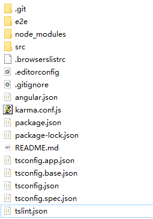
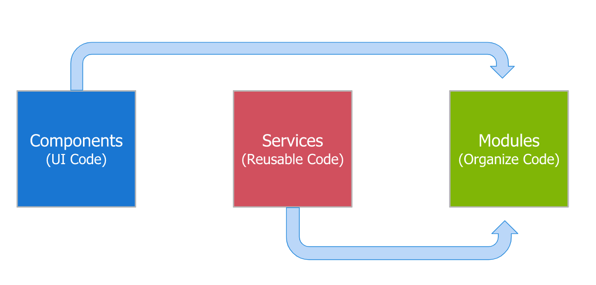
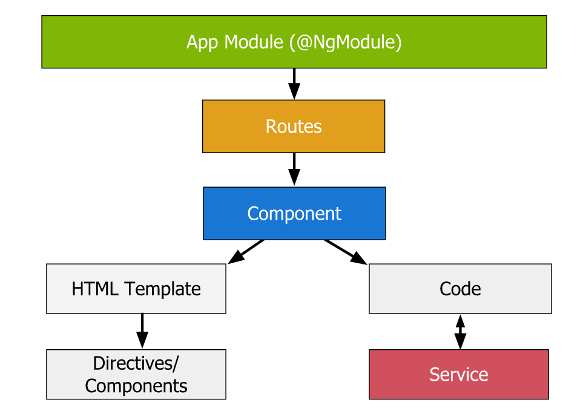
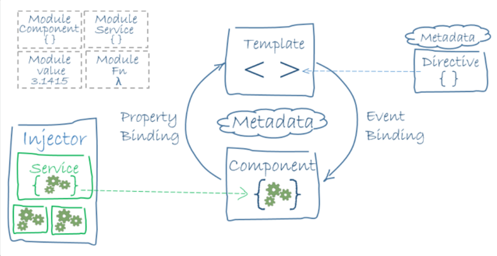
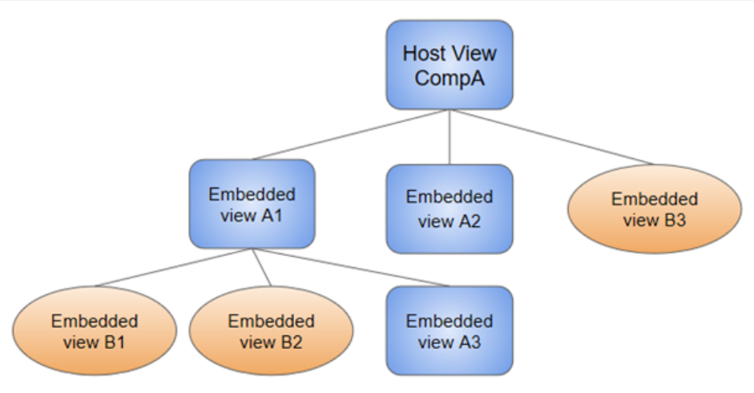

IMPORTANT:
Much of the content here is a personal summary/abbreviation of contents on the official documentation and the tutorial on Scrimba. For more complete information, please refer to the official site.
Installing Angular
To install angular, it is recommended that you first install nvm and node: https://github.com/nvm-sh/nvm
Once you have those two installed, you can install theAngular Cli: https://angular.io/guide/setup-local
- With
Angular Cli, it allows you to generate much content with some simple commands. For example, theng generate/ng gcommand. - For more information on
Angular Cli, please visit https://cli.angular.io/
Introduction to Angular
Angular is a platform and framework for building single-page client applications using HTML and TypeScript. Angular is written in TypeScript. It
implements core and optional functionality as a set of TypeScript libraries that you import into your apps.
Creating an Angular Project
To create a new angular project, you can use ng new <projectName>, which will generate a new folder with name <projectName> under your current directory, in which your project source code would go.
Once you have created your first project with ng new <projectName>, you will see that it generated many files as shown below:

A high level overview of the usages of those file would be:
| File | Usage |
|---|---|
tslint.js |
Used to control/standardize certain code/project properties across the team |
tsconfig.json |
Controls the compilation settings for ts (type-script) files |
package.json |
Controls the dependencies that our project has |
package-lock.json |
Controls the dependencies that should be immutable |
karma.conf.js |
Used for unit testing your code |
.gitignore |
Controls which files would be ignored for your git version control |
.editorconfig |
Used for customizing coding format in your editors (some editors don’t use it) |
.angular-cli.json |
Controls packaging/deployment properties of your entire project |
src |
Directory where your source code should live |
Basic Building Blocks of an Angular App
On a very high level, your application would use the following building blocks:

- Components
- UI code, how your web application looks
- Services
- Frontend/Backend service, which does the computing
- Modules
- A container assembling the above two
An example would be:

Component
A component in angular is made up of some html templates and some source codes (these two combined is also called a view), which can also include/use certain services.
- Components define views, which are sets of screen elements that Angular can choose among and modify according to your program logic and data.
- Components use services, which provide specific functionality not directly related to views. Service providers can be injected into components as dependencies, making your code modular, reusable, and efficient.
Every Angular application has at least one component, the root component that connects a component hierarchy with the page document object model (DOM). Each component defines a class that contains application data and logic, and is associated with an HTML template that defines a view to be displayed in a target environment.
A component typically has a selector, which would look like <app-customer></app-customer> (in this case, app-customzer would be your component name). This is used for Angular in its html to know which component to go to.

Component Code
Codes in a component typically contains the following elements:
- Imports
- imports necessary dependencies for your code
- Decorators
- Metadata about your component
- Class
- Actual code for your UI
For example:
Your imports could be:
1 | import { Component } from `@angular/code`; /** This is provided by Angular */ |
Your decorators could be:
1 | ({ |
You define a component’s application logic - what it does to support the view - inside a class. The class interacts with the view through an API of properties and methods:
1 | export class CustomersComponent{ // export makes this component available for other components |
A simple working example could be:
1 | // in your app.component.ts |
And of course, there needs to be a module to contain/register that component:
1 | // in your app.module.ts |
Now, if you run ng serve -o, you will see your server up and running.
Note:
ng servecompiles and serves up your application.ng serve -openorng serve -owill dong serveand then also opens the web browser with your project’s URL address.
Basic Mechanism
How doesAngular node where to look for when it finds <app-root> tag in the main.html?
- Angular looks at the
main.tsfile:
1 | import { enableProdMode } from '@angular/core'; |
- Now, in that module,
Angularwill be told to loadAppComponent
1 | import { BrowserModule } from '@angular/platform-browser'; |
Creating a Component
To create a component, you can use the command ng g component <component-name>. This will generate a folder with name <component-name> along with four files:
<component-name>.component.css- the
cssfor the below html page
- the
<component-name>.component.html- you can imagine this as a sub-
htmlpage that could be injected later into other html
- you can imagine this as a sub-
<component-name>.component.spec.ts<component-name>.component.ts- where your component code goes
It is recommended that for each new feature, you use a module to manage those components. Therefore, it is recommended that you add:
<component-name>.module.ts
For example, you can populate your <component-name>.component.ts with:
1 | import { Component, OnInit } from '@angular/core'; |
The template html could be as simple as:
1 | <h1>{{ title }}</h1> |
Now, importantly, your <component-Name>.module.ts could be:
1 | import { NgModule } from '@angular/core'; |
Now, to make this available, we would need to include this module in our root module - app.module.ts in order for Angular to see our work:
1 | import { NgModule } from '@angular/core'; |
Lastly, your app.component.ts for the displayed web page would look like:
1 | import { Component, OnInit } from '@angular/core'; |
Component Metadata
The metadata for a component tells Angular where to get the major building blocks that it needs to create and present the component and its view. In particular, it associates a template with the component, either directly with inline code, or by reference. Together, the component and its template describe a view.
In addition to containing or pointing to the template, the @Component metadata configures, for example, how the component can be referenced in HTML and what services it requires.
For example:
1 | ({ |
This example shows some of the most useful @Component configuration options:
selector: A CSS selector that tells Angular to create and insert an instance of this component wherever it finds the corresponding tag in template HTML.- For example, if an app’s HTML contains
<app-hero-list></app-hero-list>, then Angular inserts an instance of theHeroListComponentview between those tags.
- For example, if an app’s HTML contains
templateUrl: The module-relative address of this component’s HTML template. Alternatively, you can provide the HTML template inline, as the value of thetemplateproperty. This template defines the component’s host view.providers: An array of providers for services that the component requires.- In the example, this tells Angular how to provide the
HeroServiceinstance that the component’s constructor uses to get the list of heroes to display.
- In the example, this tells Angular how to provide the
Template Syntax
A template looks like regular HTML, except that it also contains Angular template syntax, which alters the HTML based on your app’s logic and the state of app and DOM data.
For example, here is a template for the Tutorial’s HeroListComponent.
1 | <h2>Hero List</h2> |
This template uses typical HTML elements like <h2> and <p>, and also includes Angular template-syntax elements, *ngFor, , (click), [hero], and <app-hero-detail>. The template-syntax elements tell Angular how to render the HTML to the screen, using program logic and data.
All those Angular HTML elements above will be explored below.
Data Binding
One of the most important and convenient feature of Angular is its data binding (a feature also common to most Template Engines). However, Angular provides more advanced data bindings as well, which you will find out shortly below.
Note:
- Without a framework like Angular, you would be responsible for pushing data values into the HTML controls and turning user responses into actions and value updates. Writing such push and pull logic by hand is tedious, error-prone, and a nightmare to read, as any experienced front-end JavaScript programmer can attest.
- One advanced feature of Angular is its two-way data binding, a mechanism for coordinating the parts of a template with the parts of a component. Add binding markup to the template HTML to tell Angular how to connect both sides.
The following diagram shows the four forms of data binding markup. Each form has a direction: to the DOM, from the DOM, or both.

The example from the HeroListComponent template above uses three of these forms.
1 | <li>{{hero.name}}</li> |
- The
(inline) interpolation displays the component’shero.nameproperty value within the<li>element. - The
[hero]property binding passes the value ofselectedHerofrom the parentHeroListComponentto theheroproperty of the childHeroDetailComponent. - The
(click)event binding calls the component’sselectHeromethod when the user clicks a hero’s name.
Note:
- If you use interpolation, you can only supply it with a
string. If you use property bindings, you can supply it with objects.- For property binding, it might look confusing, but it is that the
"value"gets rendered from the host component (maps to field with the namevalue), and then that rendered"value"gets passed into the property with namepropertyfor later uses.
- If you did
property="value"without brackets, the"value"will not be passed from the component as Angular does not know it is a property binding.
Two-way data binding (used mainly in template-driven forms) combines property and event binding in a single notation. Here’s an example from the HeroDetailComponent template that uses two-way data binding with the ngModel directive.
1 | <input [(ngModel)]="hero.name"> |
In two-way binding:
- First, a data property value flows to the input box from the component as with property binding. (Why it starts with a
[]) - Then, if the user’s changes the field, it also flow back to the component, resetting the property to the latest value, as with event binding.

Class Binding
You can also add and remove CSS class from an element’s class attribute with a class binding.
Here’s how to set the class attribute without a binding in plain HTML:
1 | <!-- standard class attribute setting --> |
- To create a single class binding, start with the prefix
classfollowed by a dot (.) and the name of the CSS class (for example,[class.foo]="hasFoo"). Angular adds the class when the bound expression is true, and it removes the class when the expression is false:
1 | <div [class.fooBar]="<some expression>"></div> |
- If
<some expression>evaluates totrue, then the CSS classfoorBarwill be added - If
<some expression>evaluates tofalse/undefined/null, then the CSS classfoorBarwill not be added or be removed (if added)
- To create a binding to multiple classes, use a generic
[class]binding without the dot (for example,[class]="classExpr"). The expression can be a space-delimited string of class names, or you can format it as an object with class names as the keys and true/false expressions as the values. With object format, Angular will add a class only if its associated value is truthy.
| Binding Type | Syntax | Input Type | Example Input Values |
|---|---|---|---|
| Single class binding | [class.foo]="hasFoo" |
`boolean | undefined |
| Multi-class binding | [class]="classExpr" |
string |
"my-class-1 my-class-2 my-class-3" |
| `{[key: string]: boolean | undefined | ||
Array<string> |
['foo', 'bar'] |
Pipes
Angular pipes let you declare display-value-transformations in your template HTML. A class with the @Pipe decorator defines a function that transforms input values to output values for display in a view.
Angular defines various pipes, such as the date pipe and currency pipe; for a complete list, see the Pipes API list. You can also define new pipes.
To specify a value transformation in an HTML template, use the pipe operator |.
1 | {{interpolated_value | pipe_name}} |
You can chain pipes, sending the output of one pipe function to be transformed by another pipe function. A pipe can also take arguments that control how it performs its transformation. For example, you can pass the desired format to the date pipe.
1 | <!-- Default format: output 'Jun 15, 2015'--> |
Directives
Angular templates are dynamic. When Angular renders them, it transforms the DOM according to the instructions given by directives. A directive is a class with a @Directive() decorator.
Note:
- A component is technically a directive. However, components are so distinctive and central to Angular applications that Angular defines the
@Component()decorator, which extends the@Directive()decorator with template-oriented features.
In addition to components, there are two other kinds of directives: structural and attribute. Angular defines a number of directives of both kinds, and you can define your own using the @Directive() decorator.
Just as for components, the metadata for a directive associates the decorated class with a selector element that you use to insert it into HTML. In templates, directives typically appear within an element tag as attributes, either by name or as the target of an assignment or a binding.
Structural Directives
Structural directives alter layout by adding, removing, and replacing elements in the DOM (hence changing parts of its structure). The example template uses two built-in structural directives to add application logic to how the view is rendered.
1 | <li *ngFor="let hero of heroes"></li> |
*ngForis an iterative; it tells Angular to stamp out one<li>per hero in theheroeslist.*ngIfis a conditional; it includes theHeroDetailcomponent only if a selected hero exists.
Attribute Directives
Attribute directives alter the appearance or behavior of an existing element (hence not changing the overall DOM structure). In templates they look like regular HTML attributes, hence the name.
The ngModel directive, which implements two-way data binding, is an example of an attribute directive. ngModel modifies the behavior of an existing element (typically <input>) by setting its display value property and responding to change events.
1 | <input [(ngModel)]="hero.name"> |
For more information on directives, learn more in the Attribute Directives and Structural Directives guides.
Module
A Module in Angular is called a NgModule, which can be interpreted as a container assembling some of your components and services for a specific feature.
An
NgModuledeclares a compilation context for a set of components that is dedicated to an application domain, a workflow, or a closely related set of capabilities. AnNgModulecan associate its components with related code, such as services, to form functional units.Every Angular app has a root module, conventionally named
AppModule, which provides the bootstrap mechanism that launches the application. An app typically contains many functional modules.Like JavaScript modules,
NgModulescan import functionality from otherNgModules, and allow their own functionality to be exported and used by otherNgModules. For example, to use the router service in your app, you import theRouterNgModule.
NgModule Metadata
An NgModule is defined by a class decorated with @NgModule(). The @NgModule() decorator is a function that takes a single metadata object (why it is surrounded by a {}), whose properties describe the module. The most important properties are as follows.
declarations: The Component, directives, and pipes that belong to thisNgModule.exports: The subset of declarations that should be visible and usable in the component templates of otherNgModules(when imported).imports: Other modules whose exported classes are needed by component templates declared in thisNgModule.providers: Creators of Service that thisNgModulecontributes to the global collection of services; they become accessible in all parts of the app. (You can also specify providers at the component level, which is often preferred.)bootstrap: The main application view, called the root component, which hosts all other app views. Only the rootNgModule(of a specific view) should set thebootstrapproperty.
An example would be:
1 | import { NgModule } from '@angular/core'; |
Note:
- A component and its template together define a view. You can imagine a view as a sub-html page that is rendered by Angular.
NgModule and Component
The aim of a component is to create a view with a html template. When you create a component, it is associated directly with a single view, called the host view (for this component). The host view can be the root of a view hierarchy, which can contain embedded views, which are in turn the host views of other components.
Those components can be in the same NgModule, or can be imported from other NgModules. Views in the tree can be nested to any depth.
A simple example of a view hierarchy could be:

The aim of a Module/NgModule is to define a compilation context - the context where Angular should be able to find all necessary components for rendering a provided html template.
A root NgModule always has a root component that is created during bootstrap, but any NgModule can include any number of additional components, which can be loaded through the router or created through the template. The components that belong to an NgModule share a compilation context.
Angular Library Modules
Angular loads as a collection of JavaScript modules. You can think of them as library modules. Each Angular library name begins with the @angular prefix. Install them with the node package manager npm and import parts of them with JavaScript import statements.
NgModules from Angular libraries using JavaScript import statements. For example, the following code imports the BrowserModule NgModule from the platform-browser library.
1 | import { BrowserModule } from '@angular/platform-browser'; |
In the example of the simple root module above, the application module needs material from within BrowserModule. To access that material, add it to the @NgModule metadata imports like this.
1 | ({ |
Service
A Service is usually pieces of code (function, data, feature) that are used across different components.
A service class definition is immediately preceded by the
@Injectable()decorator. The decorator provides the metadata that allows other providers to be injected as dependencies into your class.For example: The Angular
RouterNgModuleprovides a service that lets you define a navigation path among the different application states and view hierarchies in your app. (More on Routers will be covered later)
Angular distinguishes components from services to increase modularity and reusability. By separating a component’s view-related functionality from other kinds of processing, you can make your component classes clean and efficient.
Example of a Service
Here would be an example of a service (class) - src/app/logger.service.ts :
1 | export class Logger { |
(The above is just a simple example, an actual service usually has the @Injectable() annotation, in order to be registered with an Angular dependency injector. More on this later.)
Services can depend on other services (made available by dependency injection). For example, here’s a HeroService that depends on the Logger service, and also uses BackendService to get heroes. That service in turn might depend on the HttpClient service to fetch heroes asynchronously from a server.
1 | export class HeroService { |
Dependency Injection (DI)
DI is wired into the Angular framework and used everywhere to provide new components with the services or other things they need.
Components consume services; that is, you can inject a service into a component, giving the component access to that service class.
To define a class as a service in Angular, use the @Injectable() decorator to provide the metadata that allows Angular to inject it into a component as a dependency. Similarly, use the @Injectable() decorator to indicate that a component or other class (such as another service, a pipe, or an NgModule) has a dependency.
Dependency Injection Mechanism
In general, there are three components involved:
- The injector is the main mechanism. Angular creates an application-wide injector for you during the bootstrap process, and additional injectors as needed. You don’t have to create injectors.
- An injector creates dependencies, and maintains a container of dependency instances that it reuses if possible.
- All of those are done behind the scene.
- A provider is an object that tells an injector how to obtain or create a dependency.
Angular does dependency injection by the following three steps:
When Angular creates a new instance of a component class, it determines which services or other dependencies that component needs by looking at the constructor parameter types.
For example, the
HeroServicedependency will be injected in the example below:1
constructor(private service: HeroService) { }
When Angular discovers that a component depends on a service, it first checks if the injector has any existing instances of that service. If a requested service instance doesn’t yet exist, the injector makes one using the registered provider, and adds it to the injector before returning the service to Angular.
When all requested services have been resolved and returned, Angular can call the component’s constructor with those services as arguments.

Using Dependency Injection
For any using dependency that you need in your app, you must:
- Register a provider for the dependency (class/function/value) with the app’s injector (with
@Injectable), so that the injector can use the provider to create new instances. For a service, the provider is typically the service class itself.- This can be done either directly within the same service class, or in a specific module/component, since this process is done by annotation metadata.
- Inject that dependency by including it in the constructor argument.
- This can be done in three different ways. Each of which would be available project-wide.
Case 1: You registered the service within the same service class:
This can be done by either creating the service with Angular CLI
ng g service <service-name>, which will automatically include the annotation:1
2
3({
providedIn: 'root', // provides the dependecy at the root level
}) Or including the above annotation manually in your service class.
When you provide the service at the root level, Angular creates a single, shared instance of
HeroServiceavailable to the entire project and injects it into any class that asks for it. Registering the provider in the@Injectable()metadata also allows Angular to optimize an app by removing the service from the compiled app if it isn’t used.Case 2: You registered the service within a specific
NgModule In this case, the same instance of a service is available to all components in that
NgModule. To register at this level, use theprovidersproperty of the@NgModule()decorator.1
2
3
4
5
6
7
8({
// injecting at a module level
providers: [
BackendService,
Logger
],
...
})Case 3: You registered the service within a specific
Component When you register a provider at the component level, you get a new instance of the service with each new instance of that component. At the component level, register a service provider in the
providersproperty of the@Component()metadata.1
2
3
4
5({
selector: 'app-hero-list',
templateUrl: './hero-list.component.html',
providers: [ HeroService ]
})
Angular Fundamentals
This chapter covers, in more details, the functionalities that Angular brings to developing a frontend application. This chapter will also touch on (in the end) how to communicate with a backend server for getting/updating/posting data.
Template Syntax
This section is a comprehensive technical summary to the Angular template language (for a more complete reference, please visit https://angular.io/guide/template-syntax). This section seeks to explain basic principles of the template language and describes most of the syntax that you’ll encounter elsewhere in the guide.
Interpolation
Interpolation refers to embedding expressions into marked up text. By default, interpolation uses as its delimiter the double curly braces, .
The text between the braces is a template expression that Angular first evaluates and then converts to a string. The following interpolation illustrates the point:
1 | <!-- "The sum of 1 + 1 is 2" --> |
With interpolation, you can basically access everything defined in the bound component.ts including:
- methods
- variables
- constants
You can also do some basic operations within `{{ }}`. See Template Expressions for more details.
Note:
- Interpolation cannot evaluate data structure other than a primitive. If you are trying to evaluate an Object, then it will render it as
[object Object](obviously not what you want). If you want to use complex data structures, you need to use Property Binding or a Pipe operator|.
Template Expressions
A template expression produces a value and appears within the double curly braces, {{ }} . Angular executes the expression and assigns it to a property of a binding target; the target could be an DOM property, a component, or a directive.
For example: the interpolation braces in {{1 + 1}} surround the template expression 1 + 1. In the property binding, a template expression appears in quotes to the right of the = symbol as in [property]="expression".
The Angular template expression language employs a subset of JavaScript syntax supplemented with a few special operators for specific scenarios. The next sections cover three of these operators:
- pipe
| - safe navigation operator
- non-null assertion operator
Pipe Operator |
The result of an expression might require some transformation before you’re ready to use it in a binding. For example, you might display a number as a currency, change text to uppercase, or filter a list and sort it (visit Pipes for information on available pipe functions).
Pipes are simple functions that accept an input value and return a transformed value. They’re easy to apply within template expressions, using the pipe operator (|):
1 | <p>Title through uppercase pipe: {{title | uppercase}}</p> |
Some example usages include:
1 | <!-- convert title to uppercase, then to lowercase --> |
Note:
- The pipe operator has a higher precedence than the ternary operator (
?:), which meansa ? b : c | xis parsed asa ? b : (c | x). Nevertheless, for a number of reasons, the pipe operator cannot be used without parentheses in the first and second operands of?:. A good practice is to use parentheses in the third operand too.
Safe Navigation Operator ?
The Angular safe navigation operator, ?, guards against null and undefined values in property paths. Here, it protects against a view render failure if item is null (if null error occurs, the entire module associated with it might fail to render and cause wrong html codes being displayed).
1 | <p>The item name is: {{item?.name}}</p> |
With the safe navigation operator, ?, Angular stops evaluating the expression when it hits the first null value and renders the view without errors.
Note:
- Sometimes however,
nullvalues in the property path may be OK under certain circumstances, especially when the value starts out null but the data arrives eventually. In this case, you need to be careful for using?as it will stop evaluating immediately once it is null.
The ? operator works perfectly with long property paths such as a?.b?.c?.d as well.
Non-Null Assertion Operator !
By default, the type checker also throws an error if it can’t determine whether a variable will be null or undefined at runtime. In this case, you can tell the type checker not to throw an error by applying the postfix non-null assertion operator, !.
The Angular non-null assertion operator, !, serves the same purpose in an Angular template. For example, you can assert that item properties are also defined.
1 | <!-- Assert color is defined, even if according to the `Item` type it could be undefined. --> |
When the Angular compiler turns your template into TypeScript code, it prevents TypeScript from reporting that item.color might be null or undefined.
Note:
- Unlike the safe navigation operator, the non-null assertion operator does not guard against
nullorundefined. Rather, it tells the TypeScript type checker to suspend strictnullchecks for a specific property expression.
Built-in Template Functions
Sometimes a binding expression triggers a type error during AOT compilation and it is not possible or difficult to fully specify the type. To silence the error, you can use the $any() cast function to cast the expression to the any type as in the following example:
1 | <p>The item's undeclared best by date is: {{$any(item).bestByDate}}</p> |
When the Angular compiler turns this template into TypeScript code, it prevents TypeScript from reporting that bestByDate is not a member of the item object when it runs type checking on the template.
Data Binding and DOM Property
Angular provides many kinds of data-binding. Binding types can be grouped into three categories distinguished by the direction of data flow:
- From the source-to-view
- From view-to-source
- Two-way sequence: view-to-source-to-view
| Type | Syntax | Category |
|---|---|---|
| Interpolation Property Attribute Class Style | [target]="expression" bind-target="expression" |
One-way from data source to view target |
| Event | (target)="statement" on-target="statement" |
One-way from view target to data source |
| Two-way | [(target)]="expression" bindon-target="expression" |
Two-way |
Binding types other than interpolation have a target name to the left of the equal sign, either surrounded by punctuation, [] or (), or preceded by a prefix: bind-, on-, bindon-, and an expression to the right of the equal sign.
The target of a binding is the DOM property or event inside the binding punctuation: [], () or [()], it is not the attribute of the html tag (see below section).
HTML Attribute vs. DOM Property
For more details, please see this StackOverflow post.
In summary, when you write some html code such as:
1 | <input type="text" value="Name:"> |
You have defined 2 attributes (type and value). However, to actually display the page, the browser will first parse this code and create an Object.
Once the browser parses this code, a HTMLInputElement object will be created, and this object will contain dozens of properties like:
accept,accessKey,align,alt,attributes,autofocus,baseURI,checked,childElementCount,childNodes,children,classList,className,clientHeight, etc.Source: this StackOverflow post.
In the end, if some event happened and something in your html has changed, it will be the property of the DOM object being changed, not its html attribute.
Possible Binding Targets
The target of a data-binding is something in the DOM. Depending on the binding type, the target can be a property (element, component, or directive), an event (element, component, or directive), or sometimes an attribute name. The following table summarizes the targets for the different binding types.
| Type | Target | Examples |
|---|---|---|
| Property | Element property Component property Directive property | src, hero, and ngClass in the following:<img [src]="heroImageUrl"> <app-hero-detail [hero]="currentHero"></app-hero-detail> <div [ngClass]="{'special': isSpecial}"></div> |
| Event | Element event Component event Directive event | click, deleteRequest, and myClick in the following:(click)="onSave()">Save</button> <app-hero-detail (deleteRequest)="deleteHero()"></app-hero-detail> <div (myClick)="clicked=$event" clickable>click me</div> |
| Two-way | Event and property | <input [(ngModel)]="name"> |
| Attribute | Attribute (the exception) | <button [attr.aria-label]="help">help</button> |
| Class | class property |
<div [class.special]="isSpecial">Special</div> |
| Style | style property |
<button [style.color]="isSpecial ? 'red' : 'green'"> |
Property Binding
Property binding is a one-way mechanism that lets you set the property of a view element. Property binding flows a value in one direction, from a component’s property into a target element property. Property binding uses the [property]="expression" syntax for data binding, where the evaluation occurs in the right hand side"expression".
Note:
- While property binding allows you to deal with Objects, you cannot use it to read or pull values out of target elements. Similarly, you cannot use property binding to call a method on the target element. If the element raises events, you can listen to them with an event binding.
A simple example is setting the disabled property of a button. However, you can not only set the value of an DOM property, but also pass in variables into a component:
1 | <!-- Evaluates the buttonDisabled property of the bound component.ts --> |
Then to use that variable passed in, in your hero-detail.component.ts:
1 | ({ |
Property Binding Targets
Targets for property binding includes:
- DOM properties (e.g.
<img [src]="someURL">) - Built-in directives (e.g.
<p [ngClass]="someCSSClass"></p>)- More on this covered in Built-in Directives
- Arguments directives (e.g.
<app-my-hero [myHero]="someHero"></app-my-hero>)- To retrieve that variable
myHero, you need to use@Input() myHero: HeroType
- To retrieve that variable
Note:
- If you use the arguments directives, you need to make sure that the returned type in that
"someHero"matches the type you specified in@Input() myHero: HeroType
Once additional usage of arguments directive is to not use the [], which means the expression will not be evaluated (if you not use interpolation):
1 | <app-string-init prefix="This is a one-time initialized string."></app-string-init> |
In this case, you can still access the variable prefix, which will have the value of whatever inside " ".
However, if you use:
1 | <app-string-init prefix="{{some-expression}}"></app-string-init> |
Then you can also access the result of that expression (has to be a primitive), which goes back to the concept of Interpolation.
Content Security
Both interpolation and property binding could face security issues such as injecting <script> into the html.
For example:
1 | // inside app.component.ts |
Then, if you used Interpolation:
1 | <p><span>"{{evilTitle}}" is the <i>interpolated</i> evil title.</span></p> |
You might be wondering if that script will actually be injected and executed.
Fortunately, Angular data binding is on alert for dangerous HTML. In the above case, the HTML displays as is, and the JavaScript does not execute. Angular does not allow HTML with script tags to leak into the browser, neither with interpolation nor property binding.
This means the above snippet would be rendered as:
1 | "Template <script>alert("evil never sleeps")</script> Syntax" is the interpolated evil title. |
Similarly, if you used Property Binding:
1 | <!-- |
The result would also be sanitized:
1 | "Template Syntax" is the property bound evil title. |
Class and Style Binding
- You can also add and remove CSS class names from an element’s
classattribute with a class binding.
For more information on class binding, you can visit this section Class Binding
- If you just want to change a specific style, you can also set styles dynamically with a style binding.
To create a single style binding, start with the prefix style followed by a dot (.) and the name of the CSS style property (for example, [style.width]="width"). The property will be set to the value of the bound expression, which is normally a string. Optionally, you can add a unit extension like em or %, which requires a number type.
For example:
1 | <!-- standard style attribute setting --> |
If there are multiple styles you’d like to toggle, you can bind to the [style] property directly without the dot (for example, [style]="styleExpr"). The expression attached to the [style] binding is most often a string list of styles like "width: 100px; height: 100px;".
You can also format the expression as an object with style names as the keys and style values as the values, like {width: '100px', height: '100px'}.
| Binding Type | Syntax | Input Type | Example Input Values |
|---|---|---|---|
| Single style binding | [style.width]="width" |
`string | undefined |
| Single style binding with units | [style.width.px]="width" |
`number | undefined |
| Multi-style binding | [style]="styleExpr" |
string |
"width: 100px; height: 100px" |
| `{[key: string]: string | undefined | ||
Array<string> |
[‘width’, ‘100px’] |
Styling Precedence
A single HTML element can have its CSS class list and style values bound to multiple sources (for example, host bindings from multiple directives).
When there are multiple bindings to the same class name or style property, Angular uses a set of precedence rules to resolve conflicts and determine which classes or styles are ultimately applied to the element.
Styling precedence (highest to lowest)
- Template bindings
- Property binding (for example,
<div [class.foo]="hasFoo">or<div [style.color]="color">)- Map binding (for example,
<div [class]="classExpr">or<div [style]="styleExpr">)- Static value (for example,
<div class="foo">or<div style="color: blue">)- Directive host bindings
- Property binding (for example,
host: {'[class.foo]': 'hasFoo'}orhost: {'[style.color]': 'color'})- Map binding (for example,
host: {'[class]': 'classExpr'}orhost: {'[style]': 'styleExpr'})- Static value (for example,
host: {'class': 'foo'}orhost: {'style': 'color: blue'})- Component host bindings
- Property binding (for example,
host: {'[class.foo]': 'hasFoo'}orhost: {'[style.color]': 'color'})- Map binding (for example,
host: {'[class]': 'classExpr'}orhost: {'[style]': 'styleExpr'})- Static value (for example,
host: {'class': 'foo'}orhost: {'style': 'color: blue'})Source: https://angular.io/guide/template-syntax#styling-precedence-highest-to-lowest
Event Binding
Event binding allows you to listen for certain events such as keystrokes, mouse movements, clicks, and touches.
Angular event binding syntax consists of a target event name within parentheses on the left of an equal sign, and a quoted template statement on the right. The following event binding listens for the button’s click events, calling the component’s onSave() method whenever a click occurs:
1 | <button (click)="onSave()">Save</button> |
Alternatively, use the on- prefix, known as the canonical form:
1 | <button on-click="onSave()">Save</button> |
Both has the same effect.
Event Binding Targets
Element events may be the more common targets, but Angular looks first to see if the name matches an event property of a known directive, as it does in the following example:
1 | <h4>myClick is an event on the custom ClickDirective:</h4> |
If the name fails to match an element event or an output property of a known directive, Angular reports an “unknown directive” error.
$event and event handling statements
In an event binding, Angular sets up an event listener and handler for the target event.
When the event is raised, it is caught by the listener, and then the handler executes the template statement. The template statement typically involves a receiver, which performs an action in response to the event, such as storing a value from the HTML control into a model.
However, how do we access information stored in that event? This is actually retrieved by using $event.
Note:
- The target event determines the shape of the
$eventobject. If the target event is a native DOM element event, then$eventis a DOM event object, with properties such astargetandtarget.value.
For example, we can emulate the two-way-binding without NgModel with:
1 | <input [value]="currentItem.name" |
The above snippet does two things:
- First the property binding binds the
valueproperty in theinputtocurrentItem.name - Then, the event binding is used, and the argument passed in
$event.targetwill contain information about this event.
Then your updateName() method could look like:
1 | updateName(event: EventTarget): void{ |
If the event belongs to a directive—recall that components are directives—$event has whatever shape the directive produces.
Built-in Directives
User Input/Event
User actions such as clicking a link, pushing a button, and entering text raise DOM events. This section explains how to bind those events to component event handlers using the Angular event binding syntax.
Binding DOM Events
You can use Angular event bindings to respond to any DOM event. Many DOM events are triggered by user input. Binding to these events provides a way to get input from the user.
To bind to a DOM event, surround the DOM event name in parentheses and assign a quoted template statement to it.